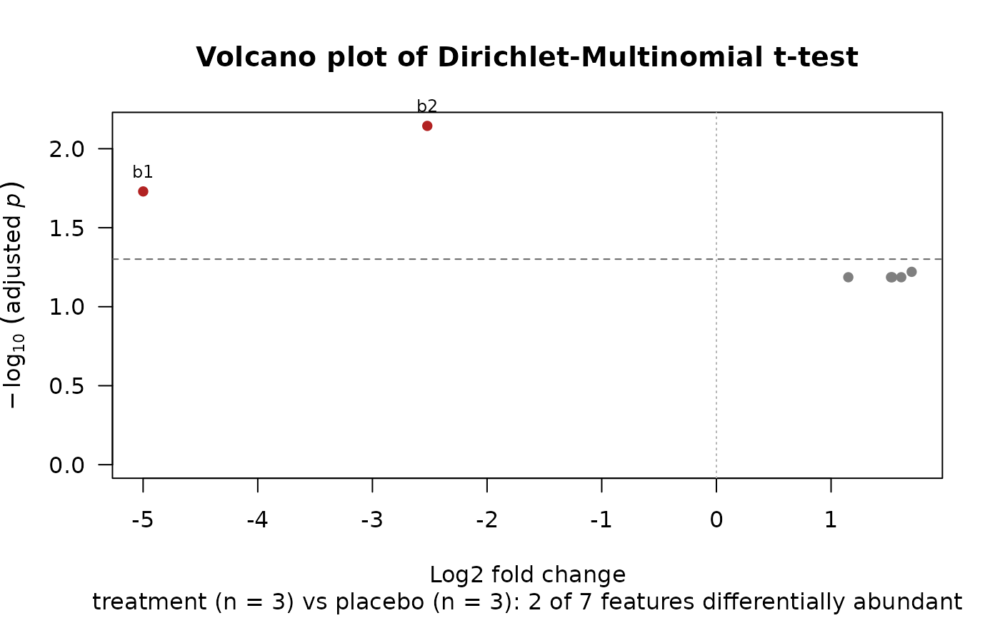

Finds features whose abundance differs between two sets of samples, carrying the uncertainty of low counts and zeros through the test (Fernandes et al. 2013, 2014). Each sample's proportions are drawn many times from their Dirichlet posterior given its counts; every draw is clr-transformed and each feature is compared with Welch's t-test; and the results are averaged over the draws. This is the ALDEx2 approach, as scikit-bio implements it, optionally with ALDEx2's and ALDEx3's scale model, which allows for uncertainty in the samples' total loads (Nixon et al. 2025).
Usage
dirmult_ttest(
counts,
groups,
data = NULL,
contrast = NULL,
margin = 1L,
pseudocount = 0.5,
scale_sd = 0,
n_draws = 128L,
alpha = 0.05,
conf_level = 0.95,
p_adjust = "holm",
seed = 0L,
cpus = n_cpus()
)Arguments
- counts
A numeric matrix of non-negative abundances (samples \(\times\) features), or any of the objects listed under Input Types. Raw counts are recommended: the Dirichlet posterior's spread depends on the counts' size, so proportions or rescaled values give wrong uncertainties.
- groups
Each sample's group: a vector or factor with one value per sample, matched to the samples in
countsby name when both are named, else in the same order. Or, whendatais given, the name of one of its columns (or a vector with one value per row ofdata). Every distinct value is a group, numbers included; there must be at least two. A factor's unused levels are dropped.- data
Sample metadata: a data frame with one row per sample, holding the columns named in
groupsorstrata. Rows are matched to the samples incountsby row name, and rows for other samples are ignored; without row names, they must be in the same order as the samples. Default:NULL.- contrast
Which samples to compare, as
c(treatment, reference), two values ofgroups. A positivelog2_fcmeans more abundant in the treatment group. UseNAas the reference to compare the treatment group with all other samples pooled; with two named groups, samples in other groups are left out. WithNULL(the default), the treatment is the first group (in sorted order, or a factor's first level) and the reference is all other samples: with two groups, the first is compared with the second, the reverse of R's usual "second level versus first".- margin
The margin containing samples.
1if samples are rows,2if samples are columns. Ignored whencountsis a special object class (e.g.phyloseq). Default:1- pseudocount
The Dirichlet prior: a positive number added to every value, zero or not, before drawing. Default:
0.5, as scikit-bio and ALDEx2. This is not the zero patch that other functions'pseudocountis (noNULLrule): every value gets it.- scale_sd
The scale model's uncertainty: the standard deviation, in log2 units, of a random difference in total load between the two sides, drawn afresh for each draw (see Details).
0(the default) assumes the clr's reference (the geometric mean) is the same on both sides, as scikit-bio'sdirmult_ttest()and ALDEx2's default do. Nixon et al. (2025) and ALDEx3 suggest0.5; use it with more draws (n_draws = 1000or more) and judge byp_adjusted(see Details). Check how your calls depend on it (see Choosingscale_sdin Details).- n_draws
The number of Monte Carlo draws from the Dirichlet posterior (scikit-bio's
draws). Default:128.- alpha
The significance level for
reject, applied to the adjusted p-values. Strictly between 0 and 1. Default:0.05, as scikit-bio (which fixes it).- conf_level
The confidence level of each draw's interval for the difference. Strictly between 0 and 1. Default:
0.95, as scikit-bio (which fixes it).- p_adjust
How to adjust the averaged p-values for testing every feature: one of stats::p.adjust.methods (
'holm', the default,'hochberg','hommel','bonferroni','BH','BY','fdr', or'none').- seed
An integer seed for the random draws. The same
seedgives the same results, for any number ofcpus.- cpus
How many parallel processing threads should be used. The default,
n_cpus(), will use all logical CPU cores.
Value
A data frame of class c('ecodive_dirmult_ttest', 'data.frame'),
one row per feature, in the order of counts, with columns:
feature: the feature's name (its index, as text, whencountshas no feature names).t: Welch's t statistic, averaged over the draws (scikit-bio'sT-statistic).log2_fc: the difference between the groups' mean clr values, treatment minus reference, in log2 units, averaged over the draws (Log2(FC)).ci_lower,ci_upper: the lowest lower bound and the highest upper bound of the draws' intervals for that difference, in log2 units (CI(2.5),CI(97.5)for the defaultconf_level).pooled_sd: the pooled within-group standard deviation of the feature's clr values, \(\sqrt{(q_1 + q_2) / (n_1 + n_2 - 2)}\) with \(q\) each side's sum of squared deviations from its mean, averaged over the draws, in log2 units (ALDEx3'spooled.SD). The scale model doesn't change it.NaNwhen each side has one sample.mean: the feature's mean clr value over the samples in the contrast, averaged over the draws, in log2 units: its typical abundance relative to the sample's geometric mean, the x axis of an MA plot. With two named groups, the samples in other groups are not included.effect: each draw's difference (with the scale model's shift) divided by its pooled standard deviation, averaged over the draws: a standardised effect size, Cohen's \(d\) (ALDEx3'scohens.d). Notlog2_fc / pooled_sd, which is a ratio of averages.p_value: Welch's two-sided p-value, averaged over the draws (pvalue).p_adjusted:p_valueadjusted across the features withp_adjust(qvalue).reject:TRUEwhenp_adjusted <= alphaand the interval (ci_lower,ci_upper) excludes 0 (Signif).
Attributes: method ("dirmult_ttest"), contrast (the treatment and reference groups; the
reference is NA when all other samples were pooled), n (the number
of samples on each side), n_draws, pseudocount, scale_sd,
alpha, conf_level, p_adjust, seed, and log_base (2: the
base of the logs in log2_fc, ci_lower and ci_upper).
Details
With \(x_{sf}\) the abundance of feature \(f\) in sample \(s\) and
\(c\) the pseudocount, each of the n_draws draws:
Draws \(G_{sf} \sim \mathrm{Gamma}(x_{sf} + c, 1)\), independently. Each sample's \(G_{s\cdot}\), divided by its sum, is a draw from the Dirichlet posterior of its proportions; the clr makes the division unnecessary.
Takes the clr: \(z_{sf} = \log G_{sf} - \frac{1}{D}\sum_g \log G_{sg}\).
For each feature, compares the treatment's \(z\) with the reference's by Welch's t-test: the difference of means \(\Delta\), its standard error \(se = \sqrt{s_1^2/n_1 + s_2^2/n_2}\), the Welch-Satterthwaite degrees of freedom \(\nu\), \(t = \Delta / se\), the two-sided p-value, and the interval \(\Delta \pm t_{\nu}\, se\), with \(t_\nu\) the \((1 + \)
conf_level\()/2\) quantile of Student's t distribution. Withscale_sd\(> 0\), a random \(\Lambda \log 2\) is first added to \(\Delta\) (see Scale uncertainty below).
t, log2_fc and p_value are the averages over the draws (log2_fc
divided by \(\log 2\)). The interval is not a quantile of the
draws: it runs from the lowest lower bound to the highest upper bound of
any draw, as scikit-bio's, so a feature is only rejected when no draw's
interval includes 0. This conservative envelope guards against false
positives among rare features, whose draws vary most.
Scale uncertainty. A clr difference is a log fold change of the
features' absolute abundances only if the groups' geometric means are
the same, i.e. if the typical feature doesn't change; when the total
load differs between the groups, every difference is off by the same
unknown amount, and treating it as known gives false positives (Nixon et
al. 2025). The scale model makes it uncertain instead: in each draw, the
log2 difference in scale between the treatment and the reference is
\(\Lambda \sim N(0,\) scale_sd\(^2)\), shared by every sample on
a side and every feature, and \(\Lambda \log 2\) is added to every
\(\Delta\) (the variances, within sides, don't change). The draws'
intervals then spread, so a feature is rejected only when its change is
clear of plausible changes in load. This is ALDEx3's clr.sm() (ALDEx2's
aldex.clr(gamma =)) for the design "treatment versus reference":
ALDEx3 also draws a shift for the intercept, which cancels from every
difference. scale_sd = 0 assumes no change in load (the clr as it is);
larger values express less confidence in that. log2_fc has the same
expected value either way: the shifts average out of log2_fc and t as
the draws increase, but not out of the p-values or the intervals.
Because the interval is the envelope of the draws' intervals, with
scale_sd > 0 it keeps widening as n_draws grows (it reaches the most
extreme shifts drawn), so reject becomes stricter with more draws; the
averaged p-values converge instead, though slowly, being driven by the
rare large shifts (ALDEx3 uses 2,000 draws). So with a scale model, use
a larger n_draws and, for decisions that don't depend on it, filter on
p_adjusted alone (as ALDEx2 and ALDEx3 do). The shift is drawn for the
group that comes first (in sorted order, or a factor's level order)
against the other, so reversing a contrast of two groups gives exactly
the mirror image, with or without a scale model. ancom() tests log ratios
without the assumption, but gives no effect sizes.
Choosing scale_sd. Report how the results depend on it: rerun with
scale_sd = 0, 0.5 and 1 (n_draws = 1000 or more) and say which
features stay rejected. Wrong scale assumptions are costly: in
differential set analysis, McGovern et al. (2023) found positive
predictive values as low as 9% under small errors in the assumed scale;
over 11 RNA-seq and other sequencing datasets, Dos Santos et al. (2026)
found that misspecified scale broke false-discovery control in several
common tools, and that a scale model (ALDEx2, ALDEx3) reduced the
unacceptably high FDRs at a cost in sensitivity: no tool offered both.
Larger scale_sd raises the smallest change that can be called. The
package website's article "Compositional Analysis of Microbiome Data"
runs such a comparison, and da_sensitivity() (scale_sds = TRUE) runs
it in one call and plots each feature's effect against scale_sd.
A side with a single sample has no variance: its features' t,
p_value, intervals and p_adjusted are NaN, with a warning, and none
are rejected (as scikit-bio's, which gives them silently).
Matching scikit-bio. With scale_sd = 0 and the same Gamma draws,
the results are those of scikit-bio's dirmult_ttest() (0.7.4) to about
1e-13: the tests feed both the same draws. The draws themselves come from ecodive's
own Gamma sampler (Marsaglia & Tsang 2000, on PCG), not NumPy's, so for
the same data the results differ from scikit-bio's by Monte Carlo error
only. The t distribution is R's stats::pt() and stats::qt() (SciPy's
stdtr() and stdtrit() in scikit-bio), and p_adjust is
stats::p.adjust(), with NaN p-values left out of the family, as
scikit-bio. Differences from scikit-bio: the optional scale model
(scikit-bio has none); alpha and
conf_level are arguments (scikit-bio fixes them at 0.05 and 0.95);
pseudocount must be positive; and seed defaults to 0, not to a
random seed.
ALDEx2 (Bioconductor) follows the same idea, but differs in its
details: it reports both Welch's and Wilcoxon's tests, averages
Benjamini-Hochberg adjusted p-values over the draws, and gives its own
effect size; its scale model (gamma) is off by default. ALDEx3 fits
linear models to each draw instead of t-tests. Their results agree with
this function's in direction and rough size, not exactly.
Effect sizes. pooled_sd, mean and effect describe each feature
for the effect and MA plots (plot.ecodive_dirmult_ttest()).
pooled_sd and effect are ALDEx3's aldex.effect() statistics, and
match them for the same draws. ALDEx2's aldex.effect() reports
related but different quantities, from random pairs of draws and
medians. Its diff.btw is the median difference between the groups,
like log2_fc. Its diff.win, "the per-feature maximum median
difference between Dirichlet instances within conditions", measures the
spread within the groups as pooled_sd does, but on another scale: for
normal data, the median absolute difference of two values is
\(0.954\sigma\), and taking the larger of the two groups' values
makes it larger still (1.2 to 1.5 times pooled_sd on a test table
with six samples a group). So ALDEx2's effect, the median ratio of
the two, is smaller than effect (by about a quarter on that table)
and ranks the features almost the same way (correlation 0.998). Its
rab.all is a median over all samples, where mean is a mean over
those in the contrast. Features with \(|\)effect\(| > 1\)
differ between the groups by more than they vary within them, as with
ALDEx2's rule of thumb.
Computation. The draws run in parallel C, one draw at a time, with
memory for one draw (8 bytes per value of the samples in the contrast).
Every sample of every draw has its own random stream, so results are
identical for any number of cpus. 500 samples \(\times\) 5,000
features, 128 draws, take a few seconds on 4 cores.
Same names in other packages
scikit-bio (Python) has dirmult_ttest(), which this follows. ALDEx2's
aldex() with test = "t" is the original method (see above).
Input Types
The counts parameter is designed to accept a simple numeric matrix, but
seamlessly supports objects from the following biological data packages:
phyloseqrbiomSummarizedExperimentTreeSummarizedExperiment
For large datasets, standard matrix operations may be slow. See
vignette('performance') for details on using optimized formats
(e.g. sparse matrices) and parallel processing.
References
Fernandes, A. D., Macklaim, J. M., Linn, T. G., Reid, G., & Gloor, G. B. (2013). ANOVA-like differential expression (ALDEx) analysis for mixed population RNA-Seq. PLoS ONE, 8, e67019.
Fernandes, A. D., Reid, J. N. S., Macklaim, J. M., McMurrough, T. A., Edgell, D. R., & Gloor, G. B. (2014). Unifying the analysis of high-throughput sequencing datasets: characterizing RNA-seq, 16S rRNA gene sequencing and selective growth experiments by compositional data analysis. Microbiome, 2, 15.
Marsaglia, G., & Tsang, W. W. (2000). A simple method for generating gamma variables. ACM Transactions on Mathematical Software, 26, 363-372.
Nixon, M. P., Gloor, G. B., & Silverman, J. D. (2025). Incorporating scale uncertainty in microbiome and gene expression analysis as an extension of normalization. Genome Biology, 26, 139. doi:10.1186/s13059-025-03609-3
McGovern, K. C., Nixon, M. P., & Silverman, J. D. (2023). Addressing erroneous scale assumptions in microbe and gene set enrichment analysis. PLOS Computational Biology, 19, e1011659. doi:10.1371/journal.pcbi.1011659
Dos Santos, S. J., Murariu, A. C., Silverman, J. D., & Gloor, G. B. (2026). Not every gene is special: modelling scale controls the false discovery rate when analysing high-throughput sequencing data. PLOS Computational Biology, 22, e1014728. doi:10.1371/journal.pcbi.1014728
Examples
# scikit-bio's example: b1 and b2 are less abundant under treatment.
x <- rbind(
c( 20, 110, 100, 101, 100, 103, 104),
c( 33, 110, 120, 100, 101, 100, 102),
c( 12, 110, 100, 110, 100, 50, 90),
c(202, 201, 9, 10, 10, 11, 11),
c(200, 202, 10, 10, 13, 10, 10),
c(203, 201, 14, 10, 10, 13, 12) )
colnames(x) <- paste0('b', 1:7)
grp <- rep(c('treatment', 'placebo'), each = 3)
res <- dirmult_ttest(x, grp, contrast = c('treatment', 'placebo'))
res
#> # A data.frame: 7 × 11
#> # Dirichlet-multinomial t-test
#> feature t log2_fc ci_lower ci_upper pooled_sd mean effect p_value
#> <chr> <dbl> <dbl> <dbl> <dbl> <dbl> <dbl> <dbl> <dbl>
#> 1 b1 -15.4 -5 -7.82 -2.3 0.43 0.502 -12.6 0.00311
#> 2 b2 -17 -2.52 -3.72 -1.33 0.206 1.74 -13.9 0.00102
#> 3 b3 6.9 1.61 -1.24 4.97 0.35 -0.378 5.63 0.0236
#> 4 b4 6.75 1.7 -0.389 4.04 0.348 -0.463 5.51 0.012
#> 5 b5 6.26 1.52 -1.3 4.55 0.342 -0.416 5.11 0.0193
#> 6 b6 3.57 1.15 -1.25 3.29 0.422 -0.539 2.91 0.0487
#> 7 b7 8.32 1.53 -1.11 3.81 0.28 -0.448 6.79 0.0163
#> # … 2 more columns: p_adjusted <dbl>, reject <lgl>
#> # Attributes: method, contrast, n, n_draws, pseudocount, scale_sd, alpha,
#> # conf_level, p_adjust, seed, log_base
plot(res)

# Each feature's difference against its spread within the groups.
plot(res, 'effect')
 # With a scale model, the intervals widen and fewer features are
# rejected.
dirmult_ttest(x, grp, contrast = c('treatment', 'placebo'), scale_sd = 0.5)
#> # A data.frame: 7 × 11
#> # Dirichlet-multinomial t-test
#> feature t log2_fc ci_lower ci_upper pooled_sd mean effect p_value
#> <chr> <dbl> <dbl> <dbl> <dbl> <dbl> <dbl> <dbl> <dbl>
#> 1 b1 -15.4 -4.97 -8.05 -1.83 0.43 0.502 -12.5 0.00331
#> 2 b2 -16.8 -2.49 -4.52 -0.387 0.206 1.74 -13.8 0.00154
#> 3 b3 7.08 1.64 -1.65 4.99 0.35 -0.378 5.78 0.0402
#> 4 b4 6.86 1.73 -1.18 4.31 0.348 -0.463 5.6 0.0278
#> 5 b5 6.44 1.55 -2.41 4.85 0.342 -0.416 5.25 0.0397
#> 6 b6 3.68 1.18 -1.81 3.6 0.422 -0.539 3 0.102
#> 7 b7 8.37 1.56 -0.774 4.57 0.28 -0.448 6.84 0.0279
#> # … 2 more columns: p_adjusted <dbl>, reject <lgl>
#> # Attributes: method, contrast, n, n_draws, pseudocount, scale_sd, alpha,
#> # conf_level, p_adjust, seed, log_base
# The default contrast: the first group ('placebo', in sorted order)
# against the rest.
dirmult_ttest(x, grp, n_draws = 32)$log2_fc
#> [1] 4.986264 2.544825 -1.607468 -1.736224 -1.538447 -1.163018 -1.485933
# Which decisions hold over a range of scale uncertainties (ALDEx2's
# gamma): see da_sensitivity().
res <- da_sensitivity(x, 'dirmult_ttest', grp, scale_sds = TRUE, n_draws = 32)
plot(res, 'traces')
# With a scale model, the intervals widen and fewer features are
# rejected.
dirmult_ttest(x, grp, contrast = c('treatment', 'placebo'), scale_sd = 0.5)
#> # A data.frame: 7 × 11
#> # Dirichlet-multinomial t-test
#> feature t log2_fc ci_lower ci_upper pooled_sd mean effect p_value
#> <chr> <dbl> <dbl> <dbl> <dbl> <dbl> <dbl> <dbl> <dbl>
#> 1 b1 -15.4 -4.97 -8.05 -1.83 0.43 0.502 -12.5 0.00331
#> 2 b2 -16.8 -2.49 -4.52 -0.387 0.206 1.74 -13.8 0.00154
#> 3 b3 7.08 1.64 -1.65 4.99 0.35 -0.378 5.78 0.0402
#> 4 b4 6.86 1.73 -1.18 4.31 0.348 -0.463 5.6 0.0278
#> 5 b5 6.44 1.55 -2.41 4.85 0.342 -0.416 5.25 0.0397
#> 6 b6 3.68 1.18 -1.81 3.6 0.422 -0.539 3 0.102
#> 7 b7 8.37 1.56 -0.774 4.57 0.28 -0.448 6.84 0.0279
#> # … 2 more columns: p_adjusted <dbl>, reject <lgl>
#> # Attributes: method, contrast, n, n_draws, pseudocount, scale_sd, alpha,
#> # conf_level, p_adjust, seed, log_base
# The default contrast: the first group ('placebo', in sorted order)
# against the rest.
dirmult_ttest(x, grp, n_draws = 32)$log2_fc
#> [1] 4.986264 2.544825 -1.607468 -1.736224 -1.538447 -1.163018 -1.485933
# Which decisions hold over a range of scale uncertainties (ALDEx2's
# gamma): see da_sensitivity().
res <- da_sensitivity(x, 'dirmult_ttest', grp, scale_sds = TRUE, n_draws = 32)
plot(res, 'traces')